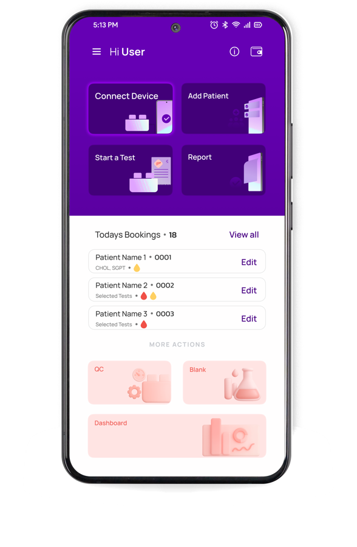
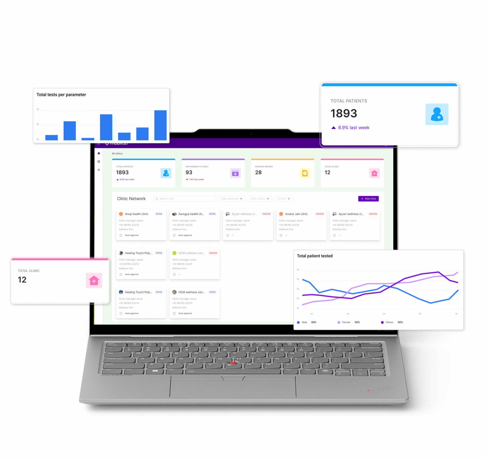

PETLAB / The device
PETLAB Duo
One device. Many tests. Anywhere.
A smart, portable diagnostic device that delivers accurate blood test results in minutes. For veterinary work this is the single case we deploy, five precision modules, one rugged unit, one connected workflow.
- AI-analysed on deviceSpecies-aware ranges, automatic high/low flags
- Report in ~30 minutesSample to structured report, no external lab
- Battery operatedClinic, home visit or mobile camp


Product
Discover PETLAB
One rugged case holds the analyser, the reagents and the sample handling. It runs on battery, connects to the PETLAB Connect app, and returns a finished report wherever you have opened it.
- PortableCompact and easy to move across locations.
- Smart report in 30 minutesAccurate results delivered in under half an hour.
- Battery operatedRuns reliably without a continuous power supply.
Four simple steps
How a test actually runs
No laboratory technician required, a veterinary assistant can be fully trained in under a day.
- 01
Book & log in
Enter pet, owner and sample details on the touchscreen or app.
- 02
Select the test
Choose the required parameters, guided, step by step, on the app.
- 03
Run the sample
Mobimix and the analyser process the cuvette automatically.
- 04
Get the AI report
Species-specific results, flagged high or low and ready in ~30 minutes.
The Software
PETLAB Connect app & cloud dashboard
A guided, IoT-linked mobile workflow, backed by a full clinic-management dashboard, so nothing lives on paper slips or static scans.
- Android appBooking, sample entry and live results, guided at every step.
- Analytics dashboardTurnaround time, test volume and trends, at a glance.
- Patient & report historyEvery animal's diagnostic history, searchable in one place.
- Secure cloud syncEvery report stored and accessible from anywhere.
- Multi-languageReports and workflow guidance adapt to the vet's preferred language.
- Structured reportsClean, shareable digital reports, not a handwritten slip.


The platform
Built on the PETLAB Duo
PETLAB runs on the PETLAB Duo, a smart, portable diagnostic device that delivers accurate blood test results in minutes. For veterinary work this is the single case we deploy: one device, one workflow, one connected ecosystem behind it.
- 01
PETLAB Duo
The portable analyser itself, the only case deployed for veterinary work.
- 02
PETLAB Connect
The Android app: IoT-linked, guided workflow with on-device AI analysis.
- 03
Cloud
Secure storage and access, every report kept and reachable from anywhere.
- 04
Review
Expert validation of results, layered on top of the automated read.
- 05
Analytics
Data analysis turning day-to-day testing into practice-level insight.
PETLAB Connect
- AI enabledOn-device intelligence reads the result and applies the right clinical logic.
- Smart error detectionAnomalous readings and sample errors are flagged before they mislead.
- Smart reports in 30 minutesA structured report, generated on the spot.
- Multi-language supportReports and guidance in the language the vet prefers.
The PETLAB dashboard
An all-in-one platform to streamline clinic operations and improve patient care.
- Clinic operationsBookings, devices and the clinic network in one view.
- AnalyticsTurnaround time, test volume and trends, at a glance.
- Patient & report historyEvery animal's diagnostic history, searchable.
- Downloadable reportsClean, shareable records, never a paper slip.
Trust & compliance
Built on mobilab's proven platform
PETLAB is the newest vertical from mobilab, India's first AI-powered, portable point-of-care diagnostic platform, now extended from human to veterinary care.
mobilab
Primary Healthtech Pvt. Ltd., incubated at IIT Guwahati, manufactures India's first AI-powered portable point-of-care diagnostic device.
Why PETLAB exists
The same diagnostic engine, recalibrated for animal reference ranges. The same licensed manufacturing, quality infrastructure and pan-India distribution network. Roughly six years of point-of-care experience, applied to veterinary care.
These figures describe the parent mobilab platform in human diagnostics, not the veterinary line.
Compliance
- CDSCO licensedMFG/IVD/2025/000042
- ISO 13485 & 9001Certified quality management
- IEC ESD compliant61000-4-2:2008 & 61000-4-8:2009
Validated by


Get in touch
Bring diagnostics closer to every animal
Tell us about your practice and we will get back to you about a demonstration of PETLAB.
“Because every result changes a life.”